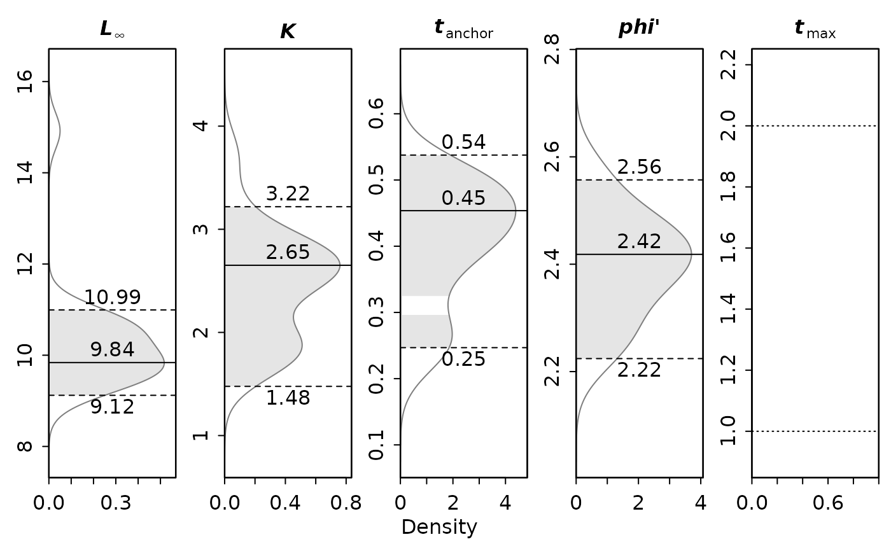
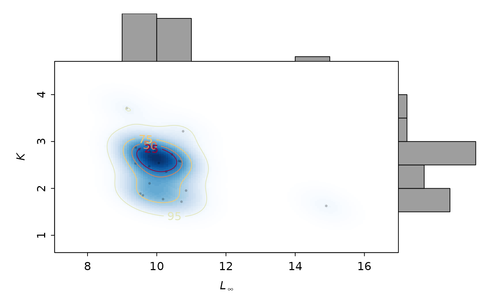

`ELEFAN_GA_boot` performs a bootstrapped fitting of the von Bertalanffy growth function (VBGF) via the ELEFAN_GA function. The length-frequency data is resampled `nresamp` times with lfqResample and ELEFAN_GA is fitted to each resampled data set. Most of the arguments are simply passed to ELEFAN_GA.
Usage
ELEFAN_GA_boot(
lfq,
seasonalised = FALSE,
low_par = NULL,
up_par = NULL,
parallel = FALSE,
nresamp = 200,
no_cores = max(1, parallel::detectCores() - 1, na.rm = TRUE),
clusterType = "PSOCK",
outfile = NULL,
popSize = 60,
maxiter = 50,
run = 10,
pmutation = 0.2,
pcrossover = 0.8,
elitism = base::max(1, round(popSize * 0.05)),
MA = 5,
addl.sqrt = FALSE,
agemax = NULL,
flagging.out = TRUE,
seed = NULL,
CI = 95,
bin_size = NA
)Arguments
- lfq
a length frequency object of the class `lfq`
- seasonalised
logical; indicating if the seasonalised von Bertalanffy growth function should be applied (default: FALSE).
- low_par
a list providing the minimum of the search space in case of real-valued or permutation encoded optimizations. When set to NULL the following default values are used:
Linf length infinity in cm (default is calculated from maximum length class in the data),
K curving coefficient (default: 0.01),
t_anchor time point anchoring growth curves in year-length coordinate system, corrsponds to peak spawning month (range: 0 to 1, default: 0),
C amplitude of growth oscillation (range: 0 to 1, default: 0),
ts summer point (ts = WP - 0.5) (range: 0 to 1, default: 0);
- up_par
a list providing the maximum of the search space in case of real-valued or permutation encoded optimizations. When set to NULL the following default values are used:
Linf length infinity in cm (default is calculated from maximum length class in the data),
K curving coefficient (default: 1),
t_anchor time point anchoring growth curves in year-length coordinate system, corrsponds to peak spawning month (range: 0 to 1, default: 1),
C amplitude of growth oscillation (range: 0 to 1, default: 1),
ts summer point (ts = WP - 0.5) (range: 0 to 1, default: 1);
- parallel
logical; should the resamples be fitted in parallel? This differs from the `parallel` argument in ELEFAN_GA in that it is not used within the `ga` function for calculation at the population level, but rather for the resamples. TropFishR has to be installed for the parallel version, because each worker loads it. Depending on the operating system, the argument `clusterType` can be adjusted. (Default: `parallel = FALSE`)
- nresamp
numeric; the number of resamples (Default: `nresamp = 200`)
- no_cores
numeric; number of cores used if `parallel = TRUE` (Default: one less than the number of available cores)
- clusterType
type of cluster, see
makeCluster(Default: `clusterType = "PSOCK"`)- outfile
character; optional name of a text file, which records the progress of the resample completions. The file is overwritten. (Default: `outfile = NULL`, no file is written)
- popSize
the population size. (Default: `popSize = 60`)
- maxiter
the maximum number of iterations to run before the GA search is halted. (Default: `maxiter = 50`)
- run
the number of consecutive generations without any improvement in the best fitness value before the GA is stopped. (Default: `run = 10`)
- pmutation
numeric. A small fraction of 1.0. The probability of mutation in a parent chromosome. Usually mutation occurs with a small probability. (Default: `pmutation = 0.2`)
- pcrossover
the probability of crossover between pairs of chromosomes. Typically this is a large value. (Default: `pcrossover = 0.8`)
- elitism
the number of best fitness individuals to survive at each generation. By default the top 5% individuals will survive at each iteration.
- MA
number indicating over how many length classes the moving average should be performed (default: 5, for more information see lfqRestructure)
- addl.sqrt
additional squareroot transformation of positive values according to Brey et al. (1988) (default: FALSE, for more information see lfqRestructure)
- agemax
maximum age of species; default NULL, then estimated from Linf
- flagging.out
logical; should positive peaks be flagged out? Original setting of ELEFAN in TRUE. Default:TRUE
- seed
seed value for random number reproducibility. Resample `x` uses the seed `seed + x`. (Default: NULL, a random seed is drawn)
- CI
percentage for confidence intervals (Default: 95)
- bin_size
optional; bin size passed to lfqModify to re-bin each resampled data set before fitting (Default: NA, no re-binning)
Value
an object of class `lfqBoot`, a list with following objects:
bootRaw a data.frame of fitted VBGF parameters (columns, including `phiL` and `agemax`) by resample (rows),
seed the seed values used for the resamples,
Rn_max the scores of the fits,
maxDen the parameters with the maximum multivariate kernel density,
median the median parameters,
CI univariate confidence intervals of the parameters,
multiCI ranges of the parameters within the multivariate confidence region,
misc an empty list for additional information.
`phiL` and `agemax` of `maxDen`, `median`, `CI` and `multiCI` are derived from `Linf` and `K` of the respective estimates. If the multivariate kernel density cannot be estimated (e.g. with fewer resamples than parameters), the function gives a warning and returns the fits with `maxDen` and `multiCI` set to `NA`, so that the fits are not lost.
References
Schwamborn, R., Mildenberger, T. K., Taylor, M. H., 2019. Assessing sources of uncertainty in length-based estimates of body growth in populations of fishes and macroinvertebrates with bootstrapped ELEFAN. Ecological Modelling, 393, 37-51
Examples
# \donttest{
# load data
data(alba)
# settings
MA <- 7
low_par <- list(Linf = 8, K = 0.1, t_anchor = 0)
up_par <- list(Linf = 15, K = 5, t_anchor = 1)
popSize <- 30
maxiter <- 20
run <- 10
pmutation <- 0.2
nresamp <- 20
res <- ELEFAN_GA_boot(lfq = alba, MA = MA, seasonalised = FALSE,
up_par = up_par, low_par = low_par,
popSize = popSize, maxiter = maxiter, run = run, pmutation = pmutation,
nresamp = nresamp, seed = 1
)
#> Genetic algorithm is running. This might take some time.
#> Genetic algorithm is running. This might take some time.
#> Genetic algorithm is running. This might take some time.
#> Genetic algorithm is running. This might take some time.
#> Genetic algorithm is running. This might take some time.
#> Genetic algorithm is running. This might take some time.
#> Genetic algorithm is running. This might take some time.
#> Genetic algorithm is running. This might take some time.
#> Genetic algorithm is running. This might take some time.
#> Genetic algorithm is running. This might take some time.
#> Genetic algorithm is running. This might take some time.
#> Genetic algorithm is running. This might take some time.
#> Genetic algorithm is running. This might take some time.
#> Genetic algorithm is running. This might take some time.
#> Genetic algorithm is running. This might take some time.
#> Genetic algorithm is running. This might take some time.
#> Genetic algorithm is running. This might take some time.
#> Genetic algorithm is running. This might take some time.
#> Genetic algorithm is running. This might take some time.
#> Genetic algorithm is running. This might take some time.
res$maxDen
#> Linf K t_anchor phiL agemax
#> 10.2726122 2.3565822 0.4349951 2.3956444 2.0000000
res$CI
#> Linf K t_anchor phiL agemax
#> lo 9.254409 1.669568 0.2420292 2.155301 1
#> up 12.973481 3.478226 0.5091895 2.767471 2
# parallel version (TropFishR has to be installed)
res <- ELEFAN_GA_boot(lfq = alba, MA = MA, seasonalised = FALSE,
up_par = up_par, low_par = low_par,
popSize = popSize, maxiter = maxiter, run = run, pmutation = pmutation,
nresamp = nresamp, seed = 1, parallel = TRUE, no_cores = 2
)
# plot resulting distributions
univariate_density(res)

LinfK_scatterhist(res)

# }